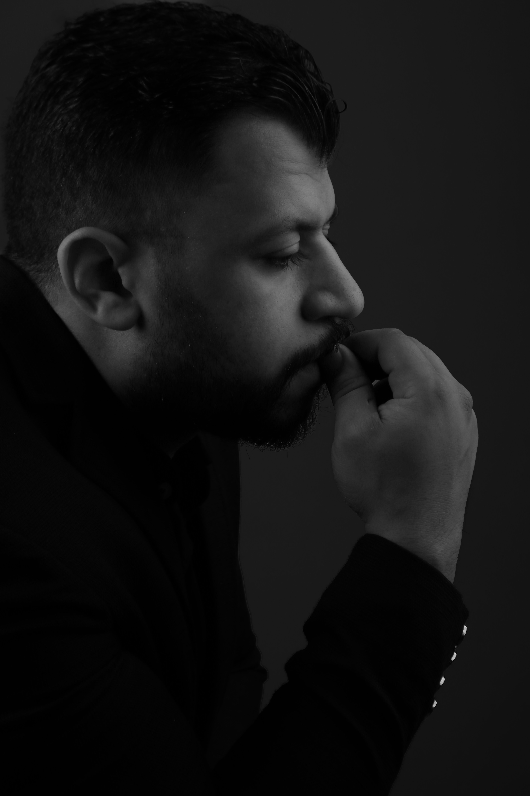
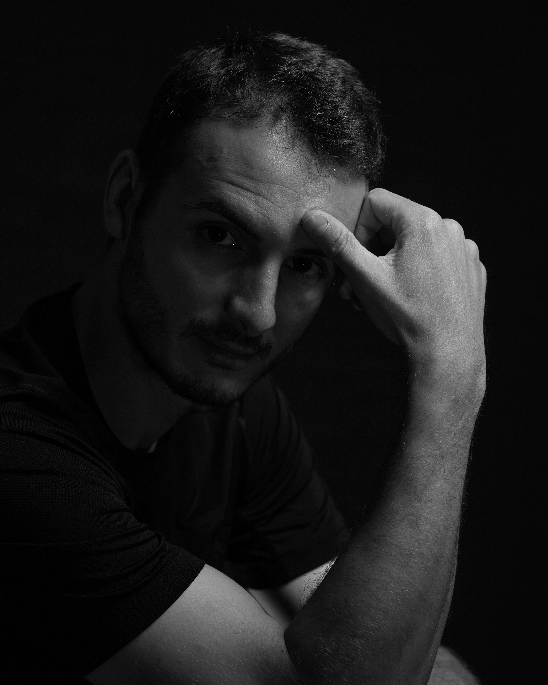
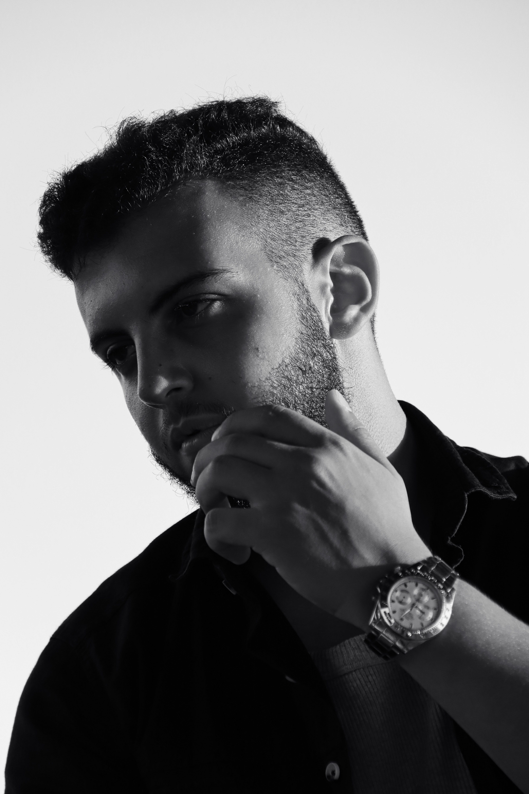
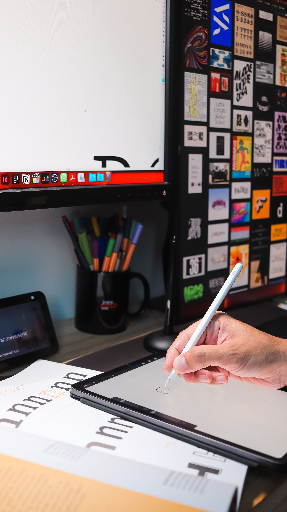
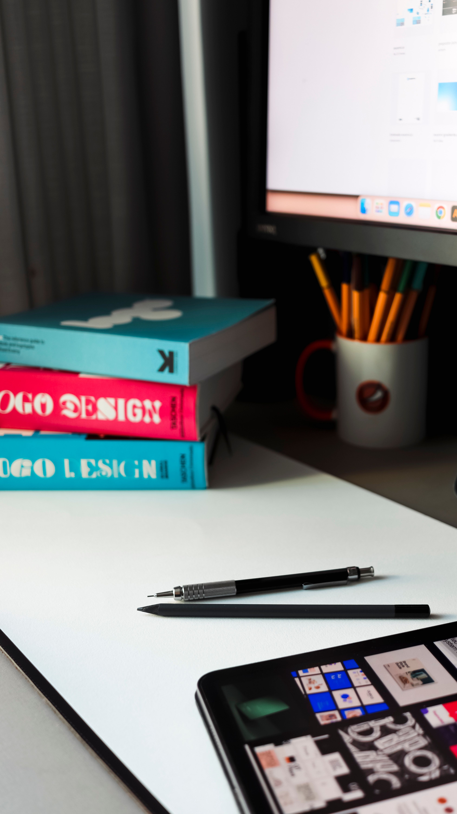
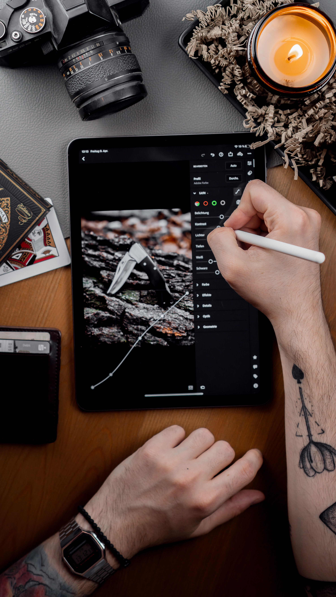
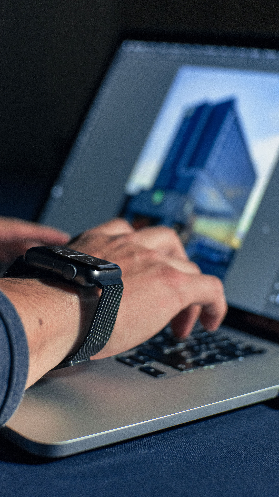

Creative
PORTFOLIO

WELCOME TO
MY PORTFOLIO
Designer graphique passionné, je transforme des idées en identités visuelles fortes. Chaque projet est une opportunité de raconter une histoire à travers la couleur, la forme et la typographie.
En savoir plus →


INTRODUCTION
Depuis plusieurs années, j'accompagne marques et entrepreneurs dans la création de leur univers visuel. Mon approche allie créativité audacieuse et rigueur technique pour des résultats qui marquent les esprits.
En savoir plus →À PROPOS
Marc Lonzo, designer graphique basé à Madagascar. Spécialisé dans l'identité de marque, le design éditorial et la direction artistique, je conçois des univers visuels cohérents et impactants pour des clients exigeants.
En savoir plus →
ÉDUCATION

École des Beaux-Arts d'Antananarivo
Formation en arts visuels et design graphique, fondations solides en composition et théorie des couleurs.
Institut Supérieur de Design
Spécialisation en identité visuelle et direction artistique, projets concrets pour des marques locales.
Académie Internationale du Digital
Perfectionnement en design UI/UX et outils numériques avancés (Adobe Suite, Figma).
EXPÉRIENCE
PROFESSIONNELLE
Studio Créatif Atelier
Designer graphique junior, conception d'identités de marque et supports de communication pour PME locales.
Agence Lonzo Design
Création de mon propre studio, accompagnement de clients en branding et design éditorial.
Indépendant
Collaboration avec des marques internationales sur des projets de packaging et campagnes visuelles.



MON DERNIER
PROJET
Projet 1
Séance portrait noir et blanc explorant le contraste et la lumière dramatique, pour une campagne d'image de marque personnelle.
Projet 2
Direction artistique d'un setup créatif complet, de la prise de vue à la retouche, illustrant mon processus de travail.
RESTONS EN
CONTACT
Une idée de projet ? Discutons-en. Je suis disponible pour des collaborations en freelance ou des missions ponctuelles.
lonzoverenako02@gmail.com
Réseau social
@marclonzo.design
Site web
www.LonzoGraphicDesigner.com
Téléphone
+261 37 77 667 45
MERCI
Pour votre attention
N'hésitez pas à me contacter pour toute collaboration ou question.